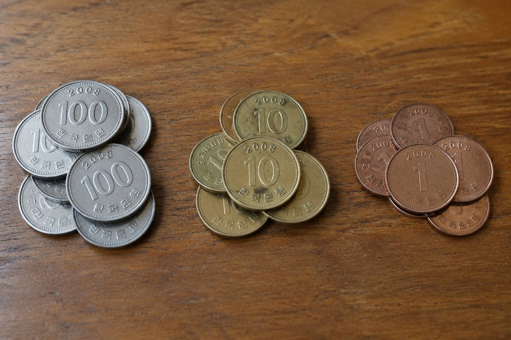

받아올림과 받아내림, 왜 필요할까?

도서관에 동화책 456권과 과학책 278권이 있어요. 모두 몇 권일까요? 세 자리 수끼리 더하고 빼는 방법을 알아봐요.
자리를 맞추어 일의 자리부터
세 자리 수를 계산할 때는 백, 십, 일의 자리를 세로로 맞추어 쓰고 일의 자리부터 계산해요.
같은 자리끼리 계산해야 하는 이유는 같은 숫자라도 자리에 따라 나타내는 값이 다르기 때문이에요. 324에서 3은 300, 2는 20, 4는 4예요.
324 + 152 = 476 (일 4+2=6, 십 2+5=7, 백 3+1=4)
이렇게 풀어요: 받아올림이 있는 덧셈
456 + 278을 풀어 볼까요? ① 일의 자리 6 + 8 = 14, 4를 쓰고 10은 십의 자리로 1을 올려요.
② 십의 자리 5 + 7 + 1 = 13, 3을 쓰고 백의 자리로 1을 올려요. ③ 백의 자리 4 + 2 + 1 = 7이에요. 답은 734예요.
456 + 278 = 734
이렇게 풀어요: 받아내림이 있는 뺄셈
503 − 267을 풀어 볼까요? 일의 자리 3에서 7을 뺄 수 없어요. 십의 자리가 0이라서 백의 자리에서 먼저 받아내려요.
백의 자리 5는 4가 되고 십의 자리는 10이 돼요. 다시 십의 자리에서 10을 일의 자리로 받아내리면 십은 9, 일은 13이에요. 13 − 7 = 6, 9 − 6 = 3, 4 − 2 = 2라서 236이에요.
503 − 267 = 236
어림하고 검산해요
계산하기 전에 어림하면 답이 맞는지 짐작할 수 있어요. 312 + 289는 약 300 + 300 = 600쯤이고, 실제로는 601이에요.
뺄셈은 덧셈으로 검산할 수 있어요. 503 − 267 = 236이 맞는지 236 + 267을 계산하면 503이 나와요.
검산: 236 + 267 = 503 → 503 − 267 = 236이 맞아요
핵심 낱말
- 받아올림
- 같은 자리의 합이 10 이상일 때 윗자리로 1을 올리는 것
- 받아내림
- 뺄 수 없을 때 윗자리에서 10을 빌려 오는 것
- 어림
- 대강 짐작해서 셈하는 것
- 검산
- 계산이 맞는지 다시 확인하는 것
한 줄 정리
- 자리를 맞추어 쓰고 일의 자리부터 계산해요.
- 덧셈에서 10 이상이면 받아올림, 뺄셈에서 뺄 수 없으면 받아내림을 해요.
- 어림으로 답을 짐작하고, 뺄셈은 덧셈으로 검산해요.
학교 교육과정 연결
- [4수01-03] 세 자리 수의 덧셈과 뺄셈의 계산 원리를 이해하고 그 계산을 할 수 있다.
- [4수01-08] 자연수의 덧셈, 뺄셈, 곱셈, 나눗셈과 관련한 여러 가지 상황에서 어림셈을 할 수 있다.